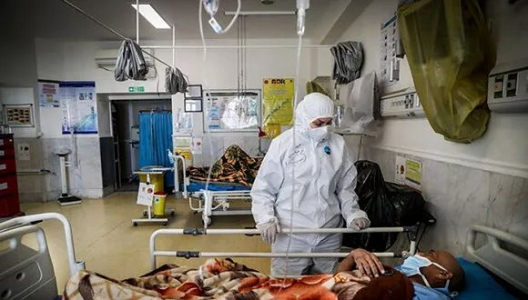

肺炎日记|3月8日：妇女节，生理卫生用品将纳入防疫保障清单
原文链接 备份链接 【财新网】（记者 黄蕙昭）在刚刚过去的妇女节中，公众迎来一个好消息：3月8日，全国妇联宣传部部长刘亚玫表示，正在协调推动将卫生巾、安全裤等生理卫生用品纳入防疫保障用品的清单，帮女性医务工作者解决实际的困难。此前，财新在 …

图片来源：MEHR
“
伊朗外长扎里夫再次敦促国际社会，不要承认和执行美国的“非法制裁”。
”
伊朗卫生部3月16日说，伊朗当天新增新冠肺炎确诊病例1053例，新增死亡129例。截至当地时间16日中午，伊朗累计确诊新冠肺炎病例14991例，其中4996例康复，853例死亡。
这是伊朗连续第五天单日新增病例超过1000人，单日死亡病例则继昨日后再次超过100人。当天，该国又有一官员死于新冠肺炎，是负责选举、监督、罢黜伊朗最高领袖的最高权力机构“伊朗专家会议”的一名成员。
据伊朗迈赫尔通讯社报道，卫生部发言人贾汉普尔已敦促民众尽量不要前往疫情“重灾区”，如礼萨呼罗珊省（Razavi Khorasan）首府马什哈德市等地。他强调，打败病毒的唯一办法是待在家中，避免不必要的出行。
为应对新冠肺炎疫情的快速发展，伊朗已在本月5日启动了国家动员计划，旨在尽早发现疑似患者，缓解医院的接诊压力。
根据该计划，30万个疫情排查小组将从疫情严重的地区开始，根据民众的个人信息进行逐一问询，疑似感染者将到医疗机构接受检测，检测结果为阳性的病例将被居家隔离，并收到药物和使用说明。
伊朗卫生部副部长阿里雷扎·雷西（Alireza Raeisi）15日说，该计划在四天内已完成了1000万人的疫情排查工作，分别在医疗中心和线上平台上排查了650万人和370万人。
央视新闻援引塔斯尼姆通讯社的报道称，在这1000万人中，有21万人出现头痛、发热等症状，其中3万人由于症状严重被送往医疗中心，其中1200人被转至医院，900人住院治疗。
伊朗最高领袖哈梅内伊15日已敦促民众配合上述计划。他强调，政府及卫生部门所采取的策略，所有人都必须执行，国家动员计划有科学依据，是有效的“非常措施”，可以“化磨难为祝福，化威胁为机遇”。
伊朗外长扎里夫当天则继续批评了美国对伊朗的“经济恐怖主义”。他在致各国外长的信件中表示，美国的单边制裁影响了伊朗的药物、医疗器材交易和人道主义援助，对伊朗抗击新冠肺炎疫情造成了阻碍。
据新华社报道，扎里夫在信中写道，尽管伊朗在抗击疫情方面拥有所有所需的科学能力和卫生体系，但美国单边制裁对伊朗抗击疫情造成阻碍。他敦促国际社会不要承认和执行这些非法制裁。据报道，扎里夫的这封信当天也交给了联合国秘书长古特雷斯。
此前一日，伊朗总统鲁哈尼已提出，美国的制裁严重阻碍了伊朗抗击新冠肺炎疫情的努力，敦促他国领导人解除对伊朗的制裁。

原文链接 备份链接 【财新网】（记者 黄蕙昭）在刚刚过去的妇女节中，公众迎来一个好消息：3月8日，全国妇联宣传部部长刘亚玫表示，正在协调推动将卫生巾、安全裤等生理卫生用品纳入防疫保障用品的清单，帮女性医务工作者解决实际的困难。此前，财新在 …
原文链接 备份链接 图片来源：Press TV “ 伊朗新增1234例新冠肺炎病例，累计确诊4747例。另据法新社报道，伊朗新增17例死亡病例，累计124例。 ” 伊朗卫生部3月6日宣布，自周四（5日）以来，该国新增1234例新冠肺炎病 …
原文链接 备份链接 随着新冠肺炎疫情的蔓延，在过去的一天，韩国、意大利、伊朗等多国新增确诊数继续上升，中国以外累计确诊病例超过15000例。 世卫组织：部分国家对新冠肺炎准备不足 当地时间3月5日，世卫组织在日内瓦召开新冠肺炎疫情例行发 …
原文链接 备份链接 图片来源：塔斯尼姆通讯社 记者：潘金花 “ “既然现在疫情已达顶峰，至少也应该在库姆和拉什特强制实施居家隔离，别让伊朗成为全球新冠肺炎死亡病例最多的国家。” ” 新冠肺炎疫情正在伊朗持续蔓延。据伊朗卫生部消息，截至5日 …
原文链接 备份链接 【财新网】（记者 丁捷 综合）中国疫情得到有效控制，全球疫情持续蔓延。据世卫组织数据，截至欧洲时间3月4日，中国境外新冠肺炎超过100例的国家达9个，其中韩国确诊破5000例。过去24小时，全球新增确诊是中国15倍。与 …